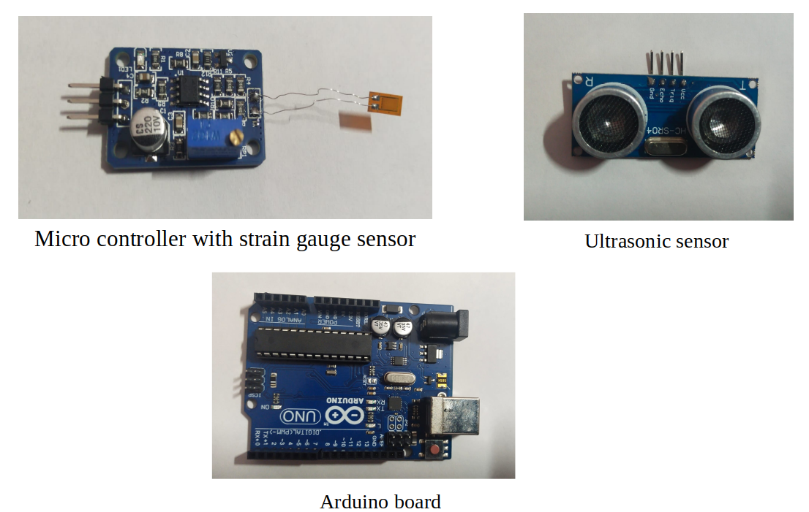

Structural health monitoring (SHM) is the process of using damage detection and characterisation techniques for critical structures like bridges, wind turbines, and tunnels. It is a non-destructive in-situ structural evaluation method that employs several types of sensors embedded or attached to the structures. SHM helps us to increase the longevity of the structure thereby reducing the overconsumption of the materials involved in construction.
The structural health monitoring process includes installing sensors, data acquisition, data transfer, and diagnostics through which the structure's safety, strength, integrity, and performance are monitored. If overloading or any other defects are observed, proper correction measures are suggested.
The beam-like structures are usually a fundamental member that is employed in the large scale architecture of civil. In the most general terms, damage can be defined as changes introduced into a system that adversely affect its current or future performance. Damage in a structure is a common phenomenon and can lead to breakdown. The service life of the structure must be smooth and safe. For damage detection specifically in Structural Health Monitoring (SHM) deals with observing the changes in mode shapes and beam natural frequencies.
